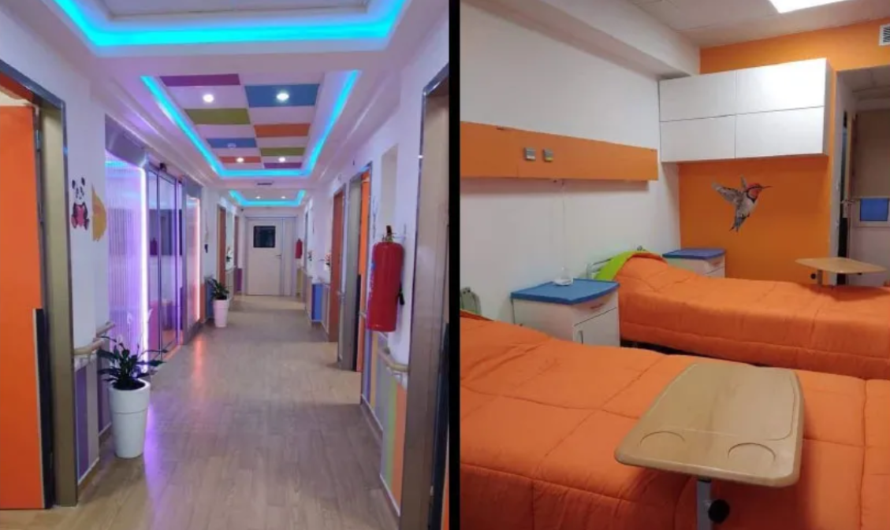

About the hospital
The oldest hospital in Tunis, it was founded in 1662 under the reign of the Mouradite
dynasty. Originally called Bimaristan Al Azzafine (Bimaristan of musicians), it is located in the El
Azzafine souk, a territory retained as inalienable property by Princess Aziza Othmana. The hospital building
still exists, at number 101 rue de la Kasbah,